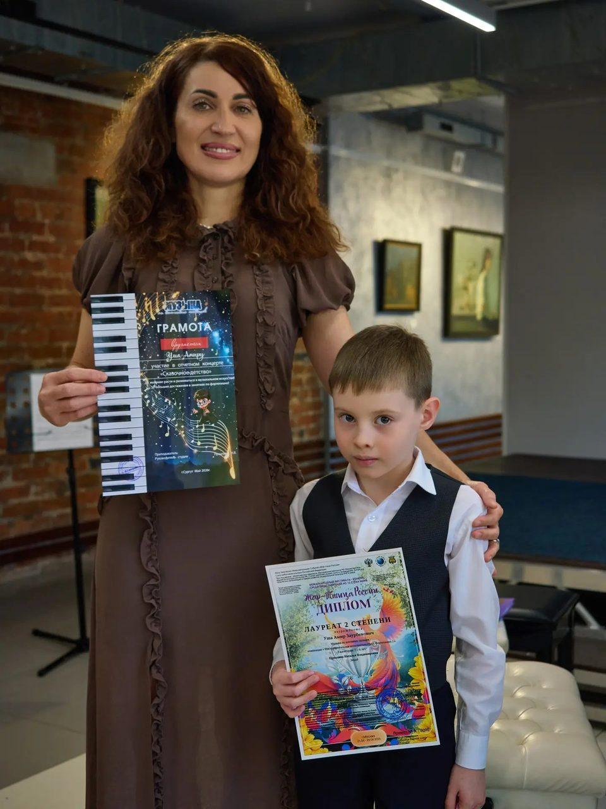
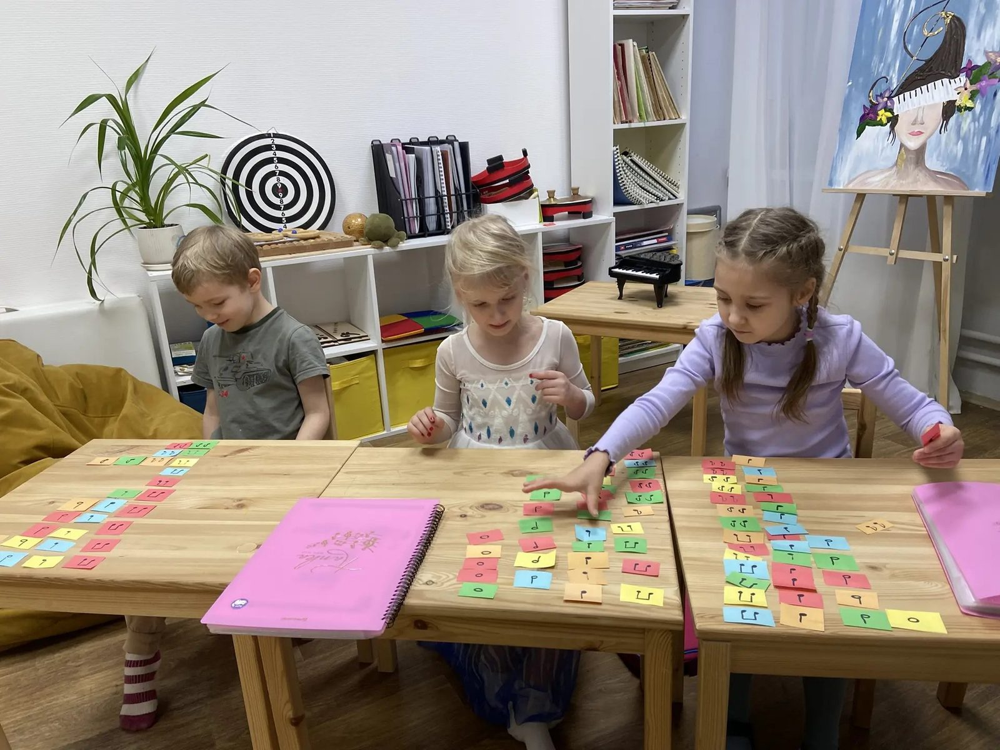
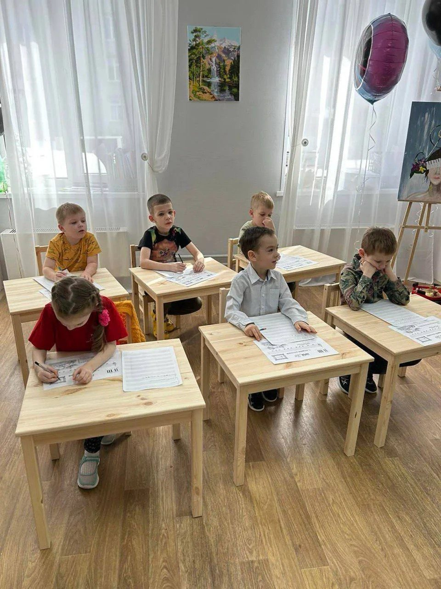
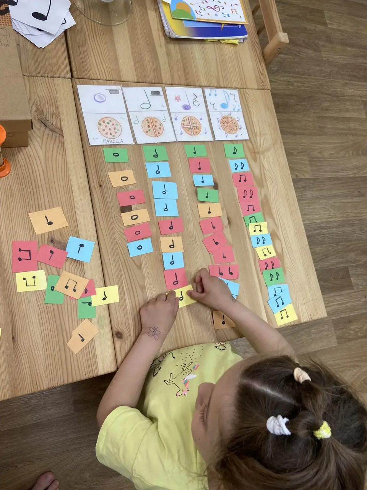
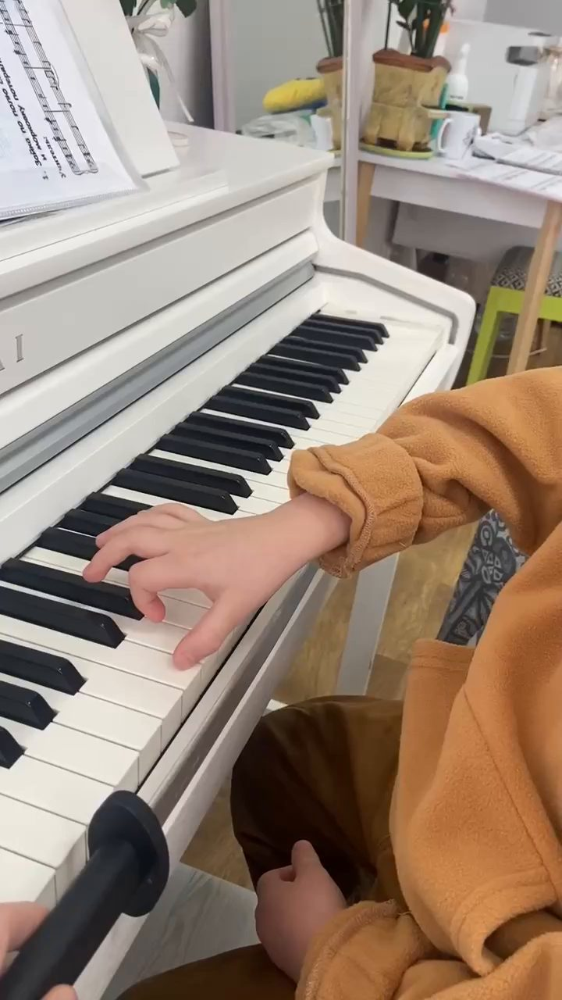
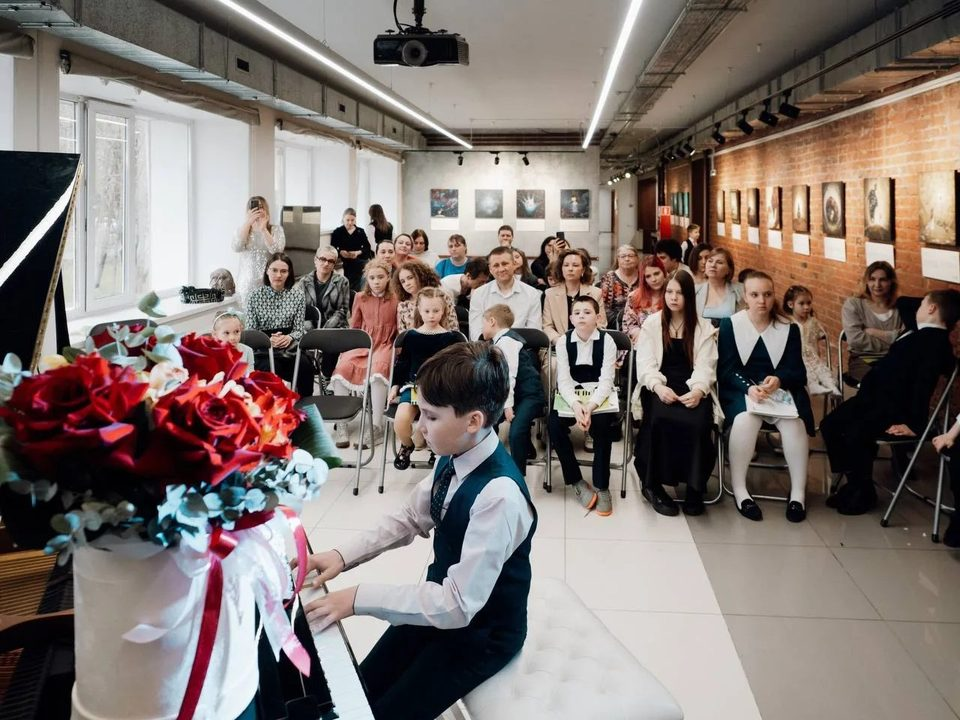
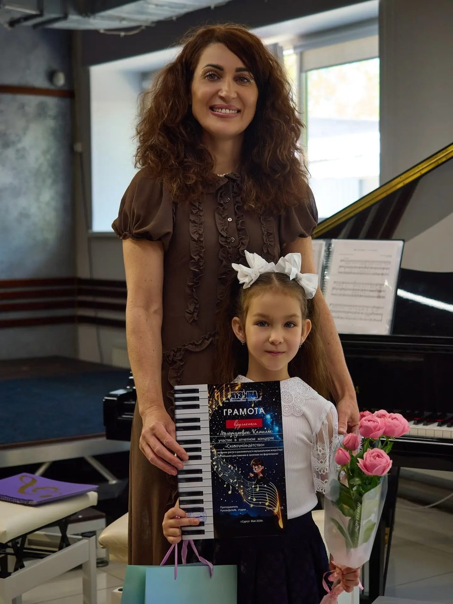
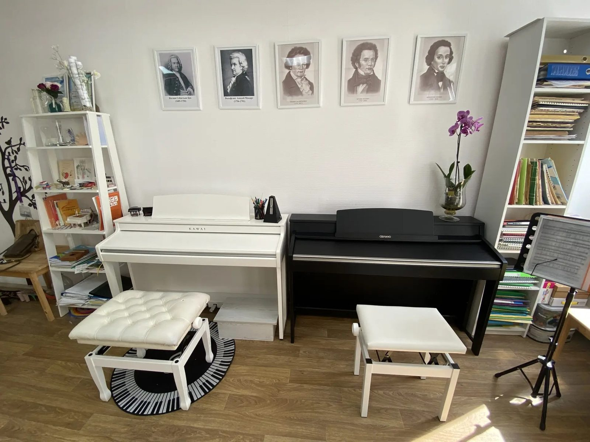
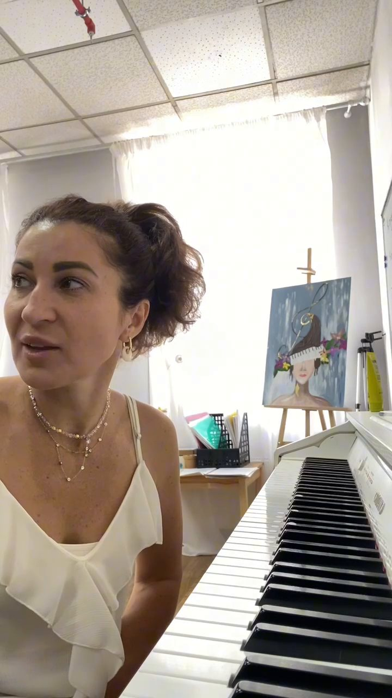
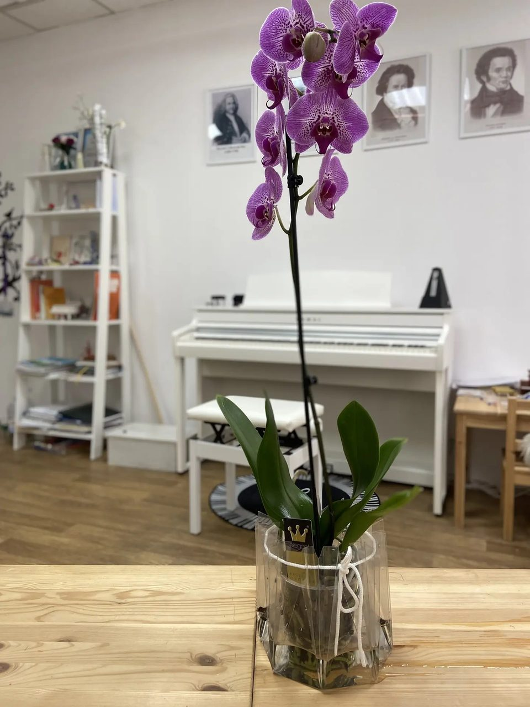

Жизнь студии
Реальные кадры: занятия, ученики, концерты, преподаватель и класс. Нажмите на постер, чтобы открыть его крупно; видео запускается только по кнопке.
Занятия и ученики
5 постеров




Концерты
2 кадра

Преподаватель и студия
3 кадра


Записаться на занятие
Позвоните — обсудим возраст, опыт и цель, подберём программу и время. Занятия по предварительной записи: Сургут, ТЦ «Исток», 2 этаж, кабинет 202.